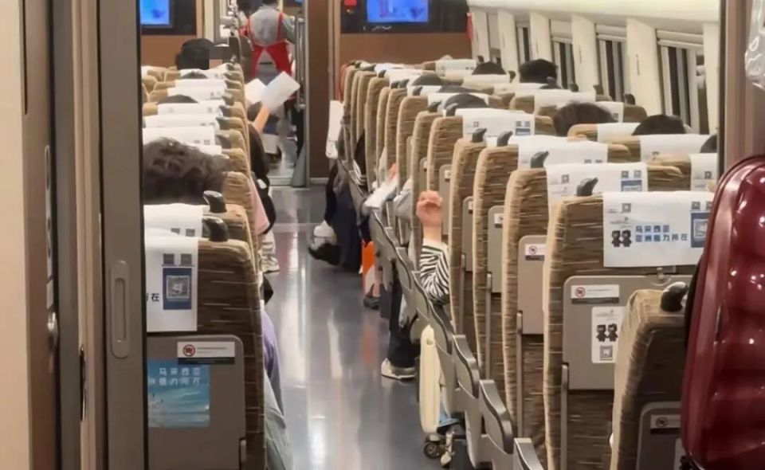

香港地處亞熱帶，常年受潮濕氣候影響，尤其在春夏季，持續的降雨和悶熱讓空氣中瀰漫著濕氣。這種環境不僅讓人感到不適，更為各種蚊蟲、細菌和霉菌提供了絕佳的滋生條件，對我們的健康構成隱形威脅。從近期高鐵車廂蚊患事件中，我們更應警惕潮濕環境帶來的潛在危機。本文將深入探討潮濕天氣下的隱形困擾，並介紹如何透過專業消毒服務，為您的生活和工作空間築起一道堅固的防線。
香港潮濕氣候帶來的挑戰
香港的潮濕氣候是眾所周知的事實。高濕度不僅讓衣物難以晾乾，牆壁容易發霉，更重要的是，它創造了一個有利於微生物和昆蟲繁殖的生態系統。當空氣濕度超過70%時，霉菌孢子會迅速生長；而積水則成為蚊蟲繁殖的溫床。這些看似微小的問題，長期累積下來，將嚴重影響我們的居住品質和身體健康。
潮濕環境下的隱形威脅：蚊蟲、細菌與霉菌
潮濕環境是多種健康問題的根源：
- 蚊蟲滋生： 蚊子在積水中產卵，潮濕的環境加速其生長週期。蚊蟲不僅叮咬擾人，更是登革熱、日本腦炎等疾病的傳播者。
- 細菌繁殖： 潮濕的表面和空氣為細菌提供了理想的生長環境，增加食物變質、疾病傳播的風險。
- 霉菌生長： 霉菌不僅會破壞牆壁、家具和衣物，其釋放的孢子更是引發過敏、哮喘等呼吸道疾病的常見過敏原。長期暴露於霉菌環境中，可能導致慢性健康問題。

圖片來源：橙新聞
高鐵蚊患事件的啟示
近期香港01報導的高鐵車廂蚊患事件，正是潮濕環境隱形危機的一個縮影。列車因檢修時開窗通風，加上粵港地區持續降雨和悶熱潮濕，導致大量蚊蟲進入並在車廂隱蔽處滋生。這說明即使是高度管理的公共空間，一旦對環境細節有所疏忽，便可能引發嚴重的衛生問題，影響公眾健康和體驗。
家居及辦公室防潮防蟲小貼士
為了應對潮濕天氣帶來的挑戰，我們可以採取以下措施：
- 保持通風： 經常開窗通風，使用抽濕機或空調降低室內濕度。
- 清除積水： 定期檢查並清理盆栽底盤、冷氣機滴水盤、浴室地漏等處的積水。
- 清潔防霉： 使用防霉清潔劑擦拭牆壁、浴室和廚房等易發霉區域。
- 密封食物： 妥善儲存食物，避免吸引蚊蟲和蟑螂。
- 修補漏洞： 檢查門窗是否有縫隙，防止蚊蟲進入。
麗雅清潔：您的專業防潮滅蟲夥伴
儘管日常清潔和防護很重要，但在潮濕天氣下，要徹底杜絕蚊蟲、細菌和霉菌的困擾，專業的消毒服務是不可或缺的。麗雅清潔公司提供全面的專業消毒滅蟲服務，針對香港潮濕氣候的特點，為您量身定制解決方案。
我們的服務包括：
- 深層清潔： 徹底清除表面及深層污垢，減少細菌滋生源。
- 專業滅蟲： 針對蚊子、蟑螂、螞蟻等常見害蟲，提供高效安全的滅蟲方案。
- 霧化消毒： 使用先進的霧化設備，將消毒劑均勻噴灑至每個角落，有效殺滅空氣中及物體表面的細菌病毒。
- 防霉處理： 針對易發霉區域進行專業防霉處理，抑制霉菌生長。
| 服務方案 | 收費 | 最低消費 |
|---|---|---|
| 施噴滅蟲 | HK$0.50/平方呎 | HK$500 |
| 施噴滅蟲加甲曱gel | HK$1.00/平方呎 | HK$1,000 |
| 空間滅蟲加甲曱gel | HK$3.00/平方呎 | HK$3,000 |
| 電噴消毒 | HK$1.50/平方呎 | HK$1,500 |
不確定選哪個方案？WhatsApp 59186741 描述情況，我們會建議最合適方案。
選擇麗雅清潔，讓您的家居和辦公室在潮濕天氣中也能保持乾爽、潔淨、無蟲害，為您和家人的健康提供最堅實的保障。
總結
潮濕天氣下的隱形危機不容小覷。從高鐵蚊患事件到日常家居環境，都提醒我們必須重視環境清潔和消毒。透過日常防護與專業服務的結合，我們可以有效應對潮濕氣候帶來的挑戰，為自己和家人創造一個更健康、更安心的生活空間。麗雅清潔隨時準備為您提供最專業的清潔消毒方案。